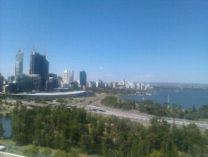
As seen from the park above the river. Only a short sightseeing tour today, as the temperature and humidity are just a bit too high for dooing a lot.
Feb 27

As seen from the park above the river. Only a short sightseeing tour today, as the temperature and humidity are just a bit too high for dooing a lot.
Feb 26
Was shown around I’m this national park today, where the extreme 38 degrees didn’t feel too bad really. Saw my first living koalas there as well.
After that of course a nice swim in the sea for cooling off. Back in the city of Subiaco, the heat and humidity were a whole different story though…
Feb 25
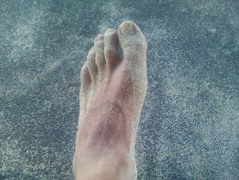
The last day before heading off to my final destination in Oz: Perth.
Spent by walking and reading along Geographe Bay, and occasionally cooling of in the incredibly clear Indian Ocean. Life could be worse…
Feb 24
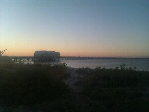
I found a spot in an unused corner of an otherwise packed caravan park at the beachfront (for half the price 🙂
The famous 1.8 km long Busselton Jetty, the longest wooden jetty in the Southern Hemnisphere, just before sunset.
It was destroyed by fire a few years ago, but was restored and just reopened 3 weeks ago. Fishing should be pretty good from it, lots of people do it all day. The view from the tip after sunset was worth the walk.
Feb 23
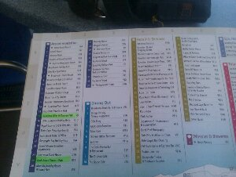
Took the bus to Busselton this morning. Next task: find a nice caravan park…
Feb 21
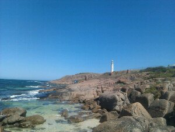
The point where the Southern and Indian Oceans meet, about 10 kms from Augusta.
I am staying at a place with wireless internet again, so I was finally able to upload all my posts. Enjoy!
Feb 20
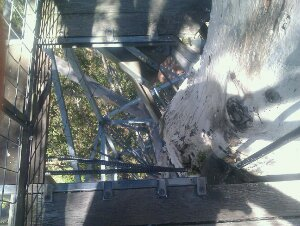
Before the time of the airplane, they used to have fire-spotters up in a few high trees. This one is still there, the viewing platform at a height of 39,6 meters. I had to climb a kind of rope-ladder to get to the top. Quite a climb, but worth it for the fantastic view.
The photo is from the ladder to the viewing platform down. Something completely different from Kaap Doorn, this…
Feb 18
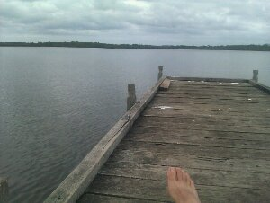
After the last walking days, another relaxed day at the Walpole Jetty, were the fish jump out of the water all the time.
It doesn’t look warm, but still it is a nice, balmy 29 degrees here under the cloud cover.
Feb 17
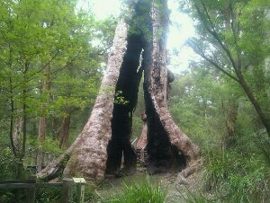
The final part of my walk on the track passed under the Giant Tingle Tree. They say it is the largest one on earth, I am not that impressed…
Looking forward to a nice, soft bed to rest in and a warm dinner tonight. The Walpole Lodge gets fantastic reviews, so that should be allright.
Feb 16
A nice walk to a beautiful hut at Frankland River. The hut was next to a wide and slow-flowing part of the river, which made for a excellent place to swim and wash all the sweat off.
Feb 15
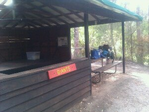
You can’t sit and read for a whole week, so I decided that it was time for another go on the track. Apparently, the part between Denmark and Walpole is highly rated, so the next 3 days will be spent on that.
I got a ride to a crossing between the walking track and the highway from a Japanese guy who was also staying in the very nice Blue Wren Travelers Rest. From there it was a short but steep walk to the first shelter in the Valley of the Giants, a forest with spectacularly large trees.
Feb 13
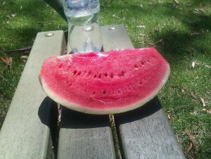
The final day of my part of the track today. It looked like it would be a long and hard day walking at the side of the road, because it is impossible to cross the river inlet.
Turned out quite different when I was offered a lift after only 3 hours of walking. Now enjoying the luxury of being back in civilization: eating a watermelon in the park.
Feb 12
Much nicer weather, lots of wildlife and even a fellow walker in the shelter at night. The guy had walked down all the way from Perth. I feel like quite an amateur with my 3 days…
Feb 11
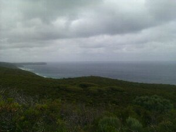
Finished my first day on the Bibbulmun track, a long distance walking track from Albany to Perth, a total of about 1000 km. I will do the first bit of it to Denmark.
After a long walk in questionable weather (read rain), I finally arrived at the West Cape Howe campground. Fantastic scenery and wildlife, but also very wet. The temperature was perfect, and the view from the campsite shelter phenomenal.
Feb 10
Looked around in Albany today, a really nice, original town. Last day here, on to Denmark the slow way tomorrow…
Feb 09
A rest day today. The weather was fine again, so I finally went for a swim in the sea for the first time this trip. Locally recommended, this was the bay with the clearest water that I have ever been in. We had it all to ourselves as well. What more can you ask for?
Feb 08
Woke up this morning with the sound of rain on the metal roof of the quite run-down hostel in Esperance.
At the breakfast table I got an invitation for riding along with anoter Dutch guest, who was going to Albany as well. This was a little bit faster than I had originally planned, but with the outlook for 5 days of rain seemed like a good idea.
We drove to Wave Rock, a spectacular granite cliff in the shape of a breaking wave, and then on to the town of Albany. After a total of about 700 km’s and 10 hours on mostly rainy country roads, we arrived at a fantastic hostel, that is located in Western Australia’s oldest hotel, from where I am writing this post.
Feb 06
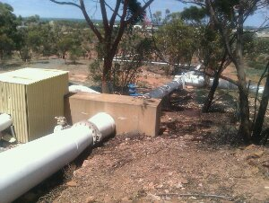
This is a part of the pipeline that is used to transport drinking water to the city of Kalgoorlie. It runs through the Outback all the way from Perth, a distance of roughly 600 kilometers.
A shame that water that they carry this far still tastes like you’re drinking from a chlorinated swimming pool!